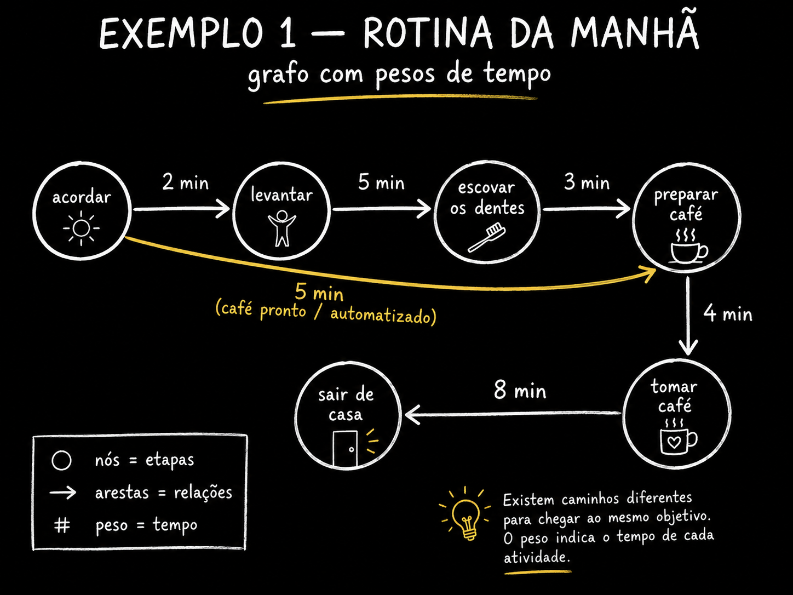

⚪ Enxergue o no: a coisa
Um grafo e uma estrutura de dados — um jeito organizado de guardar informacao — e ele e feito de duas coisas so. A primeira e o no. No e uma coisa: uma pessoa, um passo do seu processo, um ticket, um documento, um agente de IA. Se voce consegue apontar pra algo e dizer “isso aqui”, isso pode ser um no.
🆕 Novo aqui? Tres palavras antes de seguir
- Estrutura de dados: so um formato pra guardar informacao de um jeito que da pra buscar e calcular em cima. Uma lista de compras e uma estrutura de dados.
- Agente de IA: um modelo de IA (o tipo que roda atras do ChatGPT ou do Claude) que, alem de escrever texto, faz coisas sozinho: busca na web, roda codigo, edita um arquivo.
- No (node): uma coisa do seu mundo, representada como um ponto no desenho. Em codigo voce vai ver escrito
nounode.
O que olhar: quatro nos e zero linhas. Repare que nada aqui te diz nada de interessante — e so um monte de coisa. Um grafo so comeca a valer quando voce liga as coisas. E o que fazemos no proximo topico.
✓ Bons nos
- ✓“Revisar o texto” — uma unidade de trabalho com comeco e fim
- ✓“Cliente ativado” — um estado que da pra verificar
- ✓“Agente de pesquisa” — um papel com responsabilidade clara
✗ Nos ruins
- ✗“Fazer o produto” — grande demais, o grafo nao te ajuda em nada
- ✗“Apertar Enter” — pequeno demais, voce afoga em detalhe
- ✗“Coisas de marketing” — vago, ninguem sabe se terminou
Conceitos-chave
No e coisa, nao acao
Da pra apontar e nomear
Rotulo, dono, custo, estado
Nem gigante nem microscopico
➖ Ligue com arestas: a relacao
A segunda (e ultima) peca e a aresta — em ingles edge, escrita como
e nos algoritmos. Aresta e a relacao entre dois nos. Se o no e substantivo,
a aresta e verbo: “depende de”, “vira”, “conhece”, “entrega o resultado pra”.
💡 O valor mora nas arestas
Um erro classico de quem esta comecando e caprichar nos nos e tratar as arestas como enfeite. Na pratica e o contrario: os nos costumam ser obvios (todo mundo sabe listar as etapas), e a dificuldade — e o valor — esta em dizer como uma coisa leva a outra.
- •Um produto digital sozinho nao chega em ninguem. A aresta ate o consumidor (anuncio, indicacao, afiliado) e o que existe de dificil ali.
- •Num grafo de agentes, a aresta e onde mora a decisao: “se aprovou, segue; se reprovou, volta”.
- •Aresta tambem pode ter tipo — “detalha”, “contradiz”, “bloqueia” — e ai voce tem um grafo com arestas tipadas.
O que olhar: compare com o desenho anterior — sao os mesmos quatro nos. A unica coisa que mudou foram as tres linhas com rotulo. E so isso ja te permite responder perguntas que a lista nao respondia: “quem produziu esse documento?”, “o agente depende de que pra trabalhar?”.
Conceitos-chave
Aresta e relacao, nao coisa
A relacao pode ter nome
“Se X, va pra Y”
Sem aresta e so uma lista
➡️ Ponha direcao: rua de mao unica
Uma aresta pode valer nos dois sentidos ou so num. Quando ela tem seta, o grafo e dirigido (directed): saiu de A pra B, nao volta por aquela aresta. Amizade e nao-dirigida (se eu sou seu amigo, voce e meu). Ja “o pesquisador entrega pro escritor” e dirigido — o contrario nao faz sentido.
Nao-dirigido: a relacao e simetrica
Rede social, colegas de time, “roda no mesmo servidor”.
Se A se relaciona com B, B se relaciona com A. Voce desenha uma linha sem seta e pronto.
Dirigido: a relacao tem sentido
Fluxo de trabalho, dependencia, import de modulo, entrega de resultado.
A seta e o que da ordem ao sistema. Todo fluxo de agentes e dirigido.
Quer voltar? Isso e outra aresta
O caso “o revisor reprovou, volta pro escritor”.
Voltar nao e “desfazer a seta” — e desenhar uma nova aresta, com regra propria. Ela vai virar o ciclo do topico 5.
💡 Dica pratica
Quando estiver em duvida se a aresta e dirigida, faca o teste da frase: escreva a relacao como uma sentenca (“A entrega o rascunho pra B”) e tente inverter (“B entrega o rascunho pra A”). Se a frase invertida ficar falsa ou absurda, a aresta e dirigida.
Conceitos-chave
Direcao gera sequencia
Teste da frase invertida
Com regra propria
Fluxo de agente e sempre dirigido
⚖️ Ponha peso: quanto custa passar
Peso (edge weight, as vezes escrito ew)
e um numero pendurado na aresta. Minutos, reais, tokens, probabilidade, confianca. E o ingrediente que transforma
um desenho bonito numa estrutura sobre a qual da pra calcular: qual caminho e mais rapido, mais barato, mais confiavel.
O exemplo mais barato de entender e a sua manha. Voce dormindo e um no. Voce acordado e outro. Entre acordar e levantar passam 2 minutos — esse 2 e o peso. De levantar ate escovar os dentes, 5. Dos dentes ate o cafe na xicara, 3. Um grafo com peso ja responde “quanto tempo da cama ate o cafe?” — e ja permite comparar caminhos alternativos.
O que olhar: os numerinhos em cima das setas. Some-os ao longo de um caminho e voce tem o custo daquele caminho. A linha tracejada em ciano e um atalho: pula dois nos e custa 4 em vez de 10. Achar esse tipo de atalho e, literalmente, o que algoritmos de caminho minimo fazem — e o que voce vai querer do seu grafo de agentes quando o peso for “custo em tokens”.

📊 O que costuma virar peso num sistema de agentes
- Tokens / custo em dolar — o mais concreto: quanto aquele passo queima
- Latencia — quanto o passo demora (importa se o usuario espera)
- Confianca — 0 a 1: o quanto voce acredita naquela transicao
- Risco — quanto estrago aquele passo faz se der errado (deletar arquivo > ler arquivo)
Conceitos-chave
Custo, tempo, confianca
Custo do caminho = soma
Sem peso nao ha “melhor”
Peso dinamico muda a rota
🔁 Reconheca o ciclo: o loop e um grafo
Ciclo e um caminho que sai de um no e volta pra ele. Quando um grafo dirigido nao tem nenhum ciclo, ele ganha um nome que voce vai ouvir muito: DAG, de Directed Acyclic Graph — grafo dirigido aciclico. E o formato padrao de workflow ha decadas (todo pipeline de dados, todo build, todo CI e um DAG).
🎯 A frase que sustenta o curso inteiro
Um loop ja e um grafo — um grafo cujo caminho volta a um no anterior.
Guarde isso. Quando alguem anunciar que “loop morreu, agora e grafo”, voce vai saber que a frase nao faz sentido tecnico: loop e o grafo minimo com ciclo. O que muda de verdade e quantos nos voce tem e como voce os liga — e e isso que as Trilhas 3 e 4 vao destrinchar.
O que olhar: os dois lados sao grafos. A unica diferenca e a linha de baixo, a direita, que fecha a volta. Essa linha traz dois efeitos: (1) o grafo passa a poder repetir trabalho — que e exatamente o que voce quer de um agente — e (2) ele perde a garantia de terminar. Por isso todo ciclo precisa de uma condicao de parada.
⚠️ Atencao: ciclo sem saida = fatura infinita
Um DAG termina sozinho porque nao ha por onde voltar. Um ciclo, nao. Se voce ligar um agente num ciclo sem limite de repeticoes e sem criterio de progresso, ele roda ate acabar o seu credito. Toda vez que voce desenhar uma aresta de volta, escreva ao lado dela quando ela para de ser seguida.
Conceitos-chave
Caminho que volta ao inicio
Dirigido e sem ciclo
O grafo minimo com volta
Toda volta precisa de saida
🌳 Separe da arvore (e escreva seu primeiro grafo)
Lista, arvore e grafo sao a mesma familia com regras diferentes de quantas ligacoes cada no pode ter. Lista: cada item aponta pro proximo, uma fila. Arvore: cada no tem exatamente um “pai”, nada volta. Grafo: qualquer coisa liga em qualquer coisa. Lista e arvore sao casos particulares de grafo.
✓ Use arvore quando
- ✓A hierarquia e genuina e ninguem depende de um ramo vizinho
- ✓Voce so precisa de “contem / esta dentro de”
- ✓Pastas, capitulos de um livro, menu de navegacao
✗ Nao force arvore quando
- ✗Uma story depende de outra story de outra epic
- ✗Dois modulos importam o mesmo terceiro modulo
- ✗O revisor devolve o trabalho pro escritor (isso e ciclo)
🧪 Exemplo pratico: escreva seu primeiro grafo
Objetivo: transformar um processo seu num grafo em JSON e ver o computador responder perguntas sobre ele. Nao precisa instalar nada — roda no console do proprio navegador (F12 → Console) ou no Node.
// 1) O grafo: lista de adjacencia + pesos (minutos)
const grafo = {
"dormindo": { "acordar": 0 },
"acordar": { "levantar": 2, "cafe": 4 }, // 'cafe' e o atalho
"levantar": { "dentes": 5 },
"dentes": { "cafe": 3 },
"cafe": {}
};
// 2) Todos os caminhos de um no ate outro, com custo
function caminhos(g, de, ate, visitados = [], custo = 0) {
if (de === ate) return [{ rota: [...visitados, de], custo }];
if (visitados.includes(de)) return []; // corta ciclo
return Object.entries(g[de] || {}).flatMap(([viz, peso]) =>
caminhos(g, viz, ate, [...visitados, de], custo + peso)
);
}
const r = caminhos(grafo, "dormindo", "cafe");
r.sort((a, b) => a.custo - b.custo);
r.forEach(c => console.log(c.custo + " min:", c.rota.join(" → ")));
Como verificar: voce deve ver duas linhas —
4 min: dormindo → acordar → cafe e
10 min: dormindo → acordar → levantar → dentes → cafe.
Se aparecerem as duas, seu grafo esta correto e voce acabou de rodar uma busca de caminhos.
Agora troque pelo seu: substitua os nos por
<etapas do seu processo> e os pesos por
<minutos, reais ou tokens>. Se aparecer mais de um caminho, voce achou uma decisao que
seu processo estava tomando no automatico.
Checagem rapida (nao bloqueia nada): um agente que tenta, testa, e tenta de novo ate passar — que estrutura e essa?
Conceitos-chave
Lista ⊂ arvore ⊂ grafo
Dependencia cruzada
Dicionario no → vizinhos
Nao precisa de framework
📌 Resumo do Modulo
Proximo Modulo:
1.2 — Grafos no mundo real: a sua manha, o LinkedIn, o funil do seu SaaS e o backlog do time.